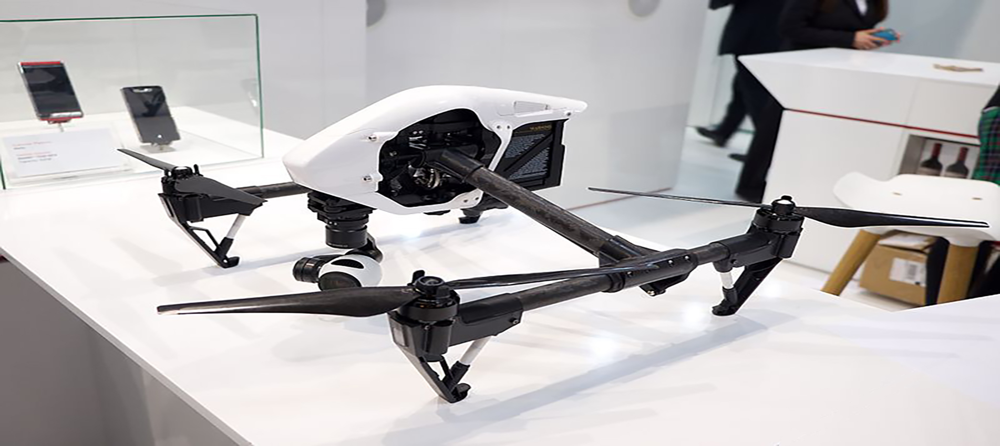
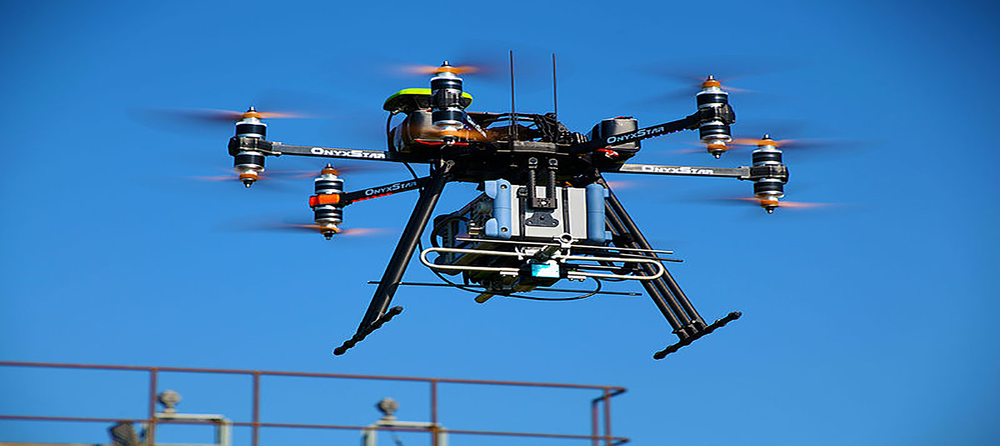
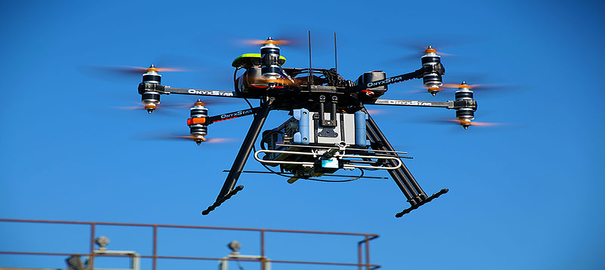
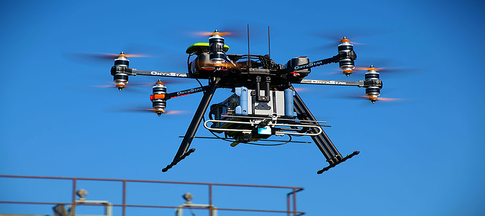
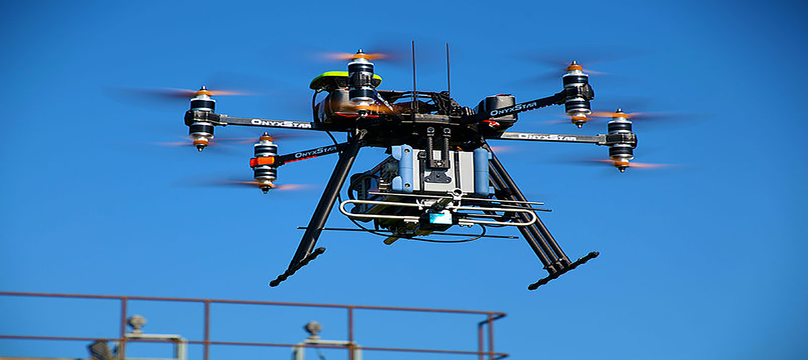

 





Unmanned aircraft system or as most of the public refer to as “drone.” Is pinned in reference to the resemblance of dumb- looking navigation and regular motor sounds of old military unmanned aircraft to the male bee. Small civilian UAVs have no life critical systems, and can thus be built out of lighter but less sturdy materials and shapes, and can use less robustly tested electronic control systems. For small UAVs, the quadcopter design has become popular, though this layout is rarely used for manned aircraft. Miniaturization also means that less-powerful propulsion technologies can be used which are not feasible for manned aircraft, such as small electric motors and batteries.